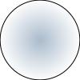

Test for SVG
-
svg를 canvas에 바로 drawImage 할 수 없다.
img 로 부른 다음에 canvas에 drawImage 해야한다. (이거 테스트 한다고 만든 문서다.) -
svg에서 선이 1px 미만일 이거나 그려질 때 1px 이만이 되는 경우 canvas와 img 와 svg 의 그려지는 이미지 모양이 다를 수 있다.
svg와 img는 거의 같은데 canvas가 선이 옅은 색으로 그려진다. -
svg 속에서
<use xlink:href="circle.svg#svg8"></use>처럼 외부 파일 불러 사용할 경우 그라데이션이 동작 안한다. 왜그런지는 모르겠다.

img dataurl
' sodipodi:docname='circle.svg'%3E%3Cdefs id='defs2'%3E%3ClinearGradient inkscape:collect='always' id='linearGradient2340'%3E%3Cstop style='stop-color:%239aa0aa;stop-opacity:1;' offset='0' id='stop2336' /%3E%3Cstop style='stop-color:%239aa0aa;stop-opacity:0;' offset='1' id='stop2338' /%3E%3C/linearGradient%3E%3CradialGradient inkscape:collect='always' xlink:href='%23linearGradient2340' id='radialGradient2342' cx='82.051743' cy='217.35367' fx='82.051743' fy='217.35367' r='61.604279' gradientTransform='matrix(0.21475951,0,0,0.21472952,-4.3922291,237.09856)' gradientUnits='userSpaceOnUse' /%3E%3C/defs%3E%3Csodipodi:namedview id='base' pagecolor='%23ffffff' bordercolor='%23666666' borderopacity='1.0' inkscape:pageopacity='0.0' inkscape:pageshadow='2' inkscape:zoom='0.98994949' inkscape:cx='276.50477' inkscape:cy='299.58942' inkscape:document-units='mm' inkscape:current-layer='layer1' showgrid='false' units='px' inkscape:window-width='1920' inkscape:window-height='1017' inkscape:window-x='-8' inkscape:window-y='-8' inkscape:window-maximized='1' /%3E%3Cmetadata id='metadata5'%3E%3Crdf:RDF%3E%3Ccc:Work rdf:about=''%3E%3Cdc:format%3Eimage/svg+xml%3C/dc:format%3E%3Cdc:type rdf:resource='http://purl.org/dc/dcmitype/StillImage' /%3E%3Cdc:title%3E%3C/dc:title%3E%3C/cc:Work%3E%3C/rdf:RDF%3E%3C/metadata%3E%3Cg inkscape:label='Layer 1' inkscape:groupmode='layer' id='layer1' transform='translate(0,-270.54165)'%3E%3Ccircle style='opacity:1;fill:url(%23radialGradient2342);fill-opacity:1;fill-rule:evenodd;stroke:%23000000;stroke-width:0.26458333;stroke-linecap:butt;stroke-linejoin:miter;stroke-miterlimit:4;stroke-dasharray:none;stroke-dashoffset:0;stroke-opacity:1;paint-order:normal' id='path815' cx='13.229163' cy='283.77081' r='13.201695' /%3E%3C/g%3E%3C/svg%3E%0A)
object
svg
svg use
svg use external
svg for script
canvas